OTIUM is the practice of deliberate leisure. In the classical sense, otium is not escape from work but time when attention returns to memory, landscape, and thought — without a utilitarian deadline.
We shape routes for lingering, not for checklist tourism. The goal is presence in a place rather than consumption of sights.
OTIUM is not a tour operator. It is an invitation to walk, pause, and leave a route unfinished if the light on a façade deserves another minute.
Исторические и справочные гербы
Guide. Places in this edition: 12.
Сингапур — город-государство у пролива между Индийским и Тихим океанами.
Торговый факторий, британская колония, японская оккупация и независимое развитие превратили остров в финансовый хаб с высотной застройкой, садами и строгой урбанистикой. Многокультурная кухня и образование — основа идентичности.
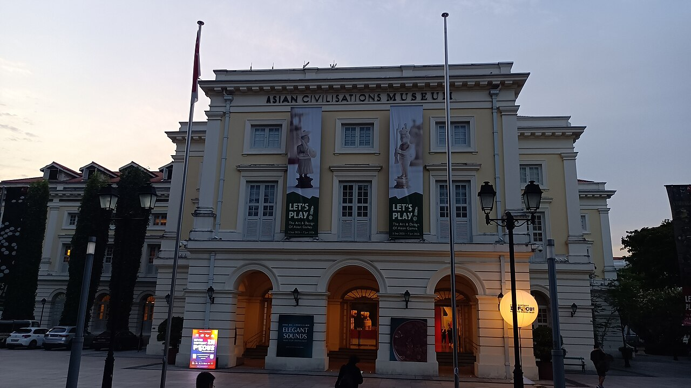
Riverfront galleries on trade, faith, and design linking Singapore to wider Asian regions.
Government offices became a thematic museum as the civic district pedestrianised.
Curatorial anchor for multicultural origin stories.
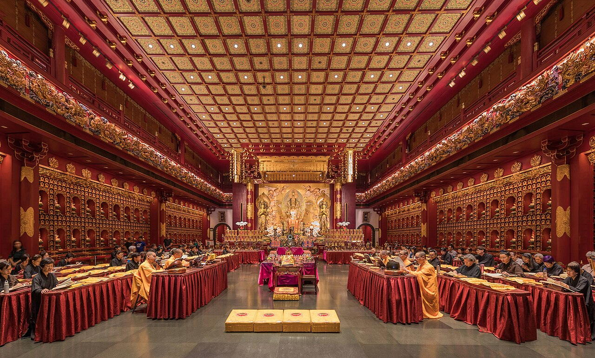
Rooftop orchid garden and Buddhist culture museum below prayer halls with processions on feast days.
Built to enshrine a tooth relic tradition brought from Myanmar networks.
Chinatown's monumental modern temple counterweight to shophouse density.
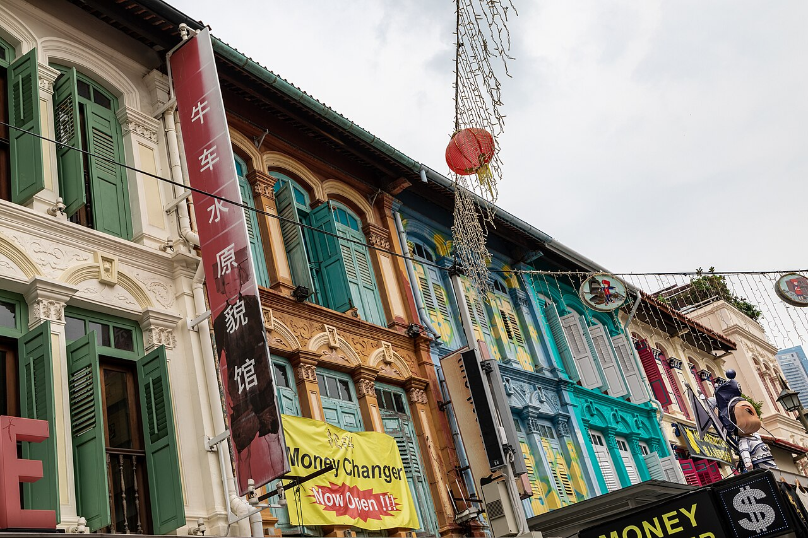
Souvenir arcades and hawker stalls under lanterns between temple gates and boutique hotels.
Conservation gating balanced tourism with resident temple life.
Densest pedestrian retail in historic Chinatown.
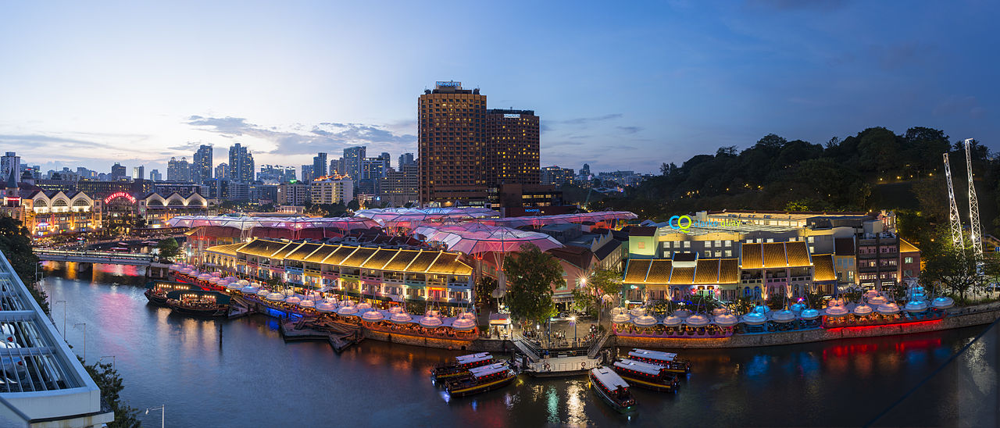
Riverfront dining and nightlife in restored godowns, linked by pedestrian bridges to Boat Quay upstream.
Named for Governor Clarke; warehouses turned into clubs after clean-up of the Singapore River campaign.
Evening temperature drop makes this a social heat sink for visitors.
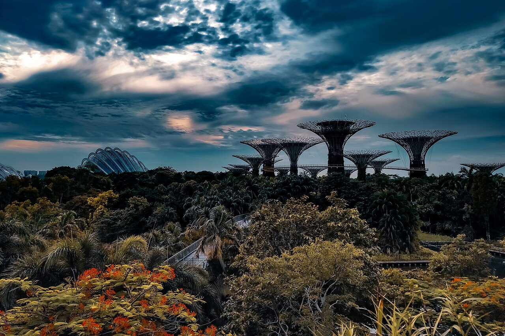
Supertree grove light shows, Cloud Forest dome, and Flower Dome seasonal displays on reclaimed waterfront land.
Part of Marina Bay's land reclamation strategy to add green tourism capacity beside the financial core.
Singapore's flagship hortitecture attraction.
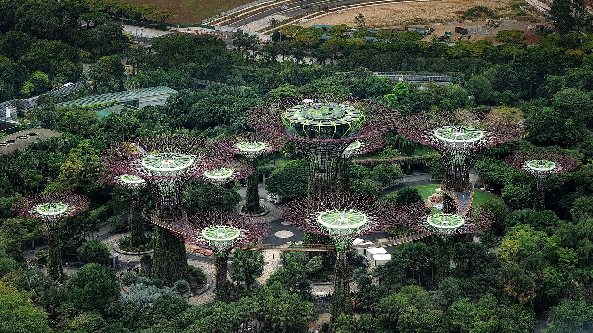
Evening light shows on tree-like towers with OCBC Skyway tickets above succulents.
National gardens strategy reclaimed land into horticultural tourism capacity.
Night skyline choreography facing the financial towers.
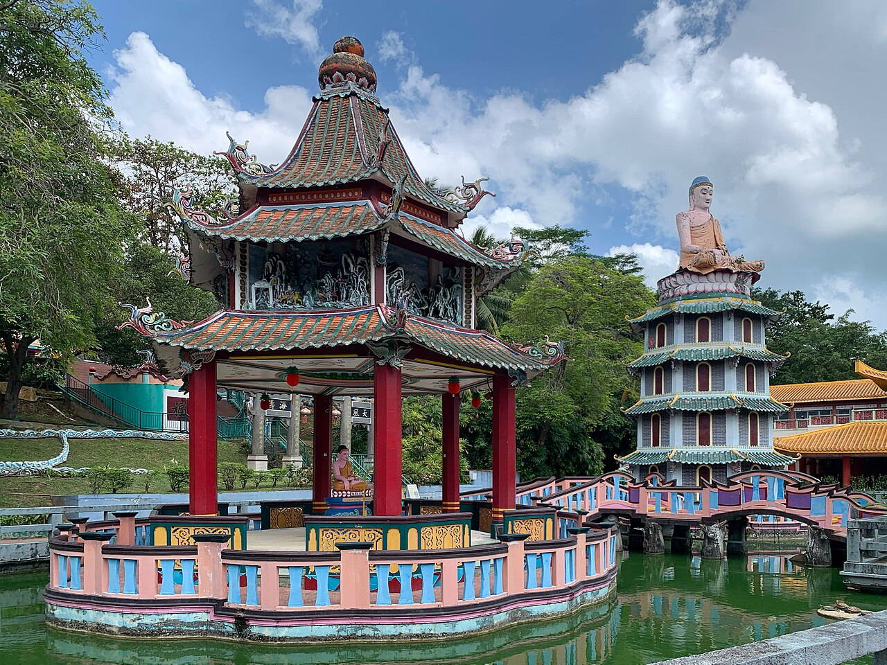
Surreal sculpture park illustrating Chinese folklore and morality tales—ten courts of hell section is graphic but famous.
Aw family built Tiger Balm fortune into this educational garden; state took over management in later decades.
Weird heritage slice rarely duplicated elsewhere in Southeast Asia.
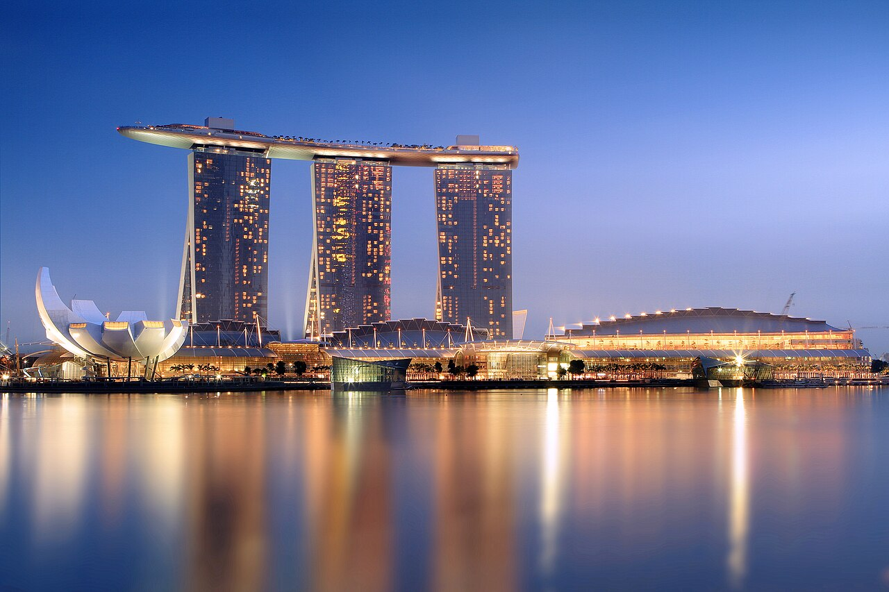
Resort complex with museum, mall, convention centre, and cantilevered SkyPark pool deck visible from bay viewpoints.
Moshe Safdie's design became Singapore's post-2010 skyline signature across from the financial district.
Anchor of the Marina Bay leisure cluster with Gardens by the Bay.
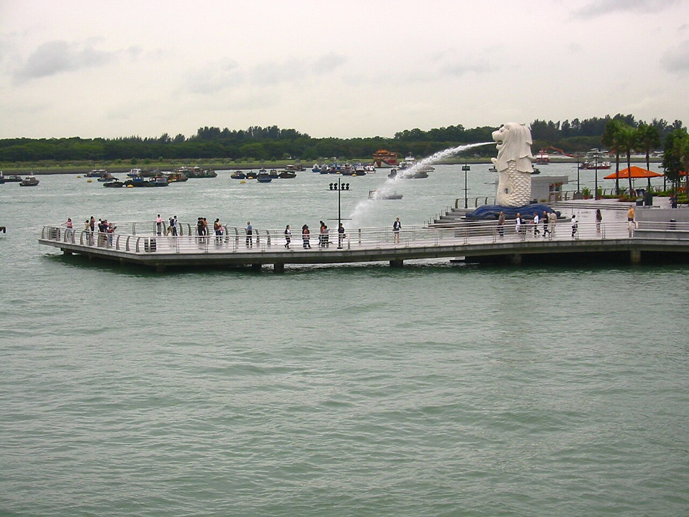
Merlion fountain facing Marina Bay—tourist icon referencing Singapore's fishing-village past and 'lion city' name.
Designed by Fraser Brunner as a Singapore Tourism Board symbol; the current site improves harbour sightlines.
Mandatory photo stop framing the bay skyline.
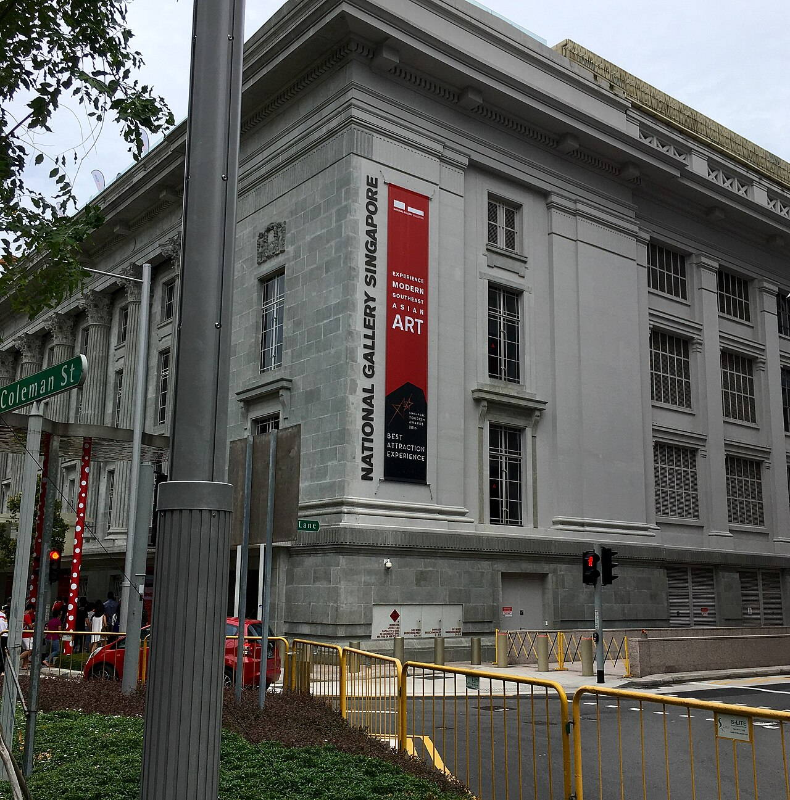
Southeast Asian modern art across linked courtyards and rooftop sculpture fields.
Two national monuments merged into one climate-controlled museum circuit.
Largest public display of Singapore and regional modernism.
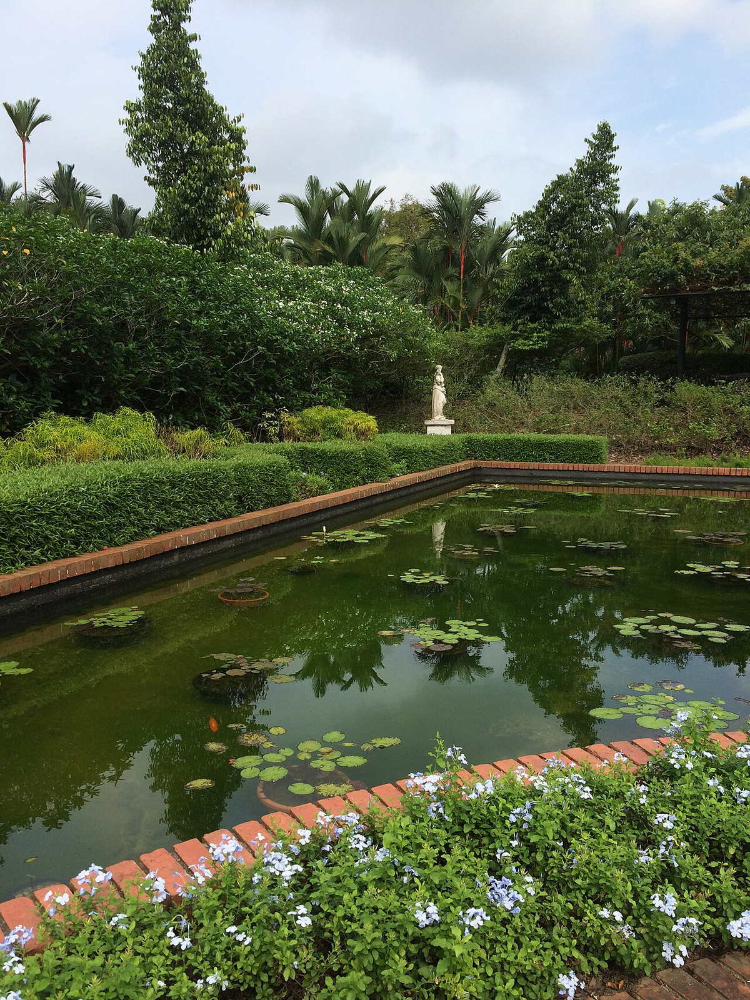
National orchid garden hybrids and lakeside concert lawns on the MRT Circle Line stop.
Rubber experiments here spread across colonial plantations; later eras emphasised public leisure.
UNESCO site rare for a tropical botanic institution.
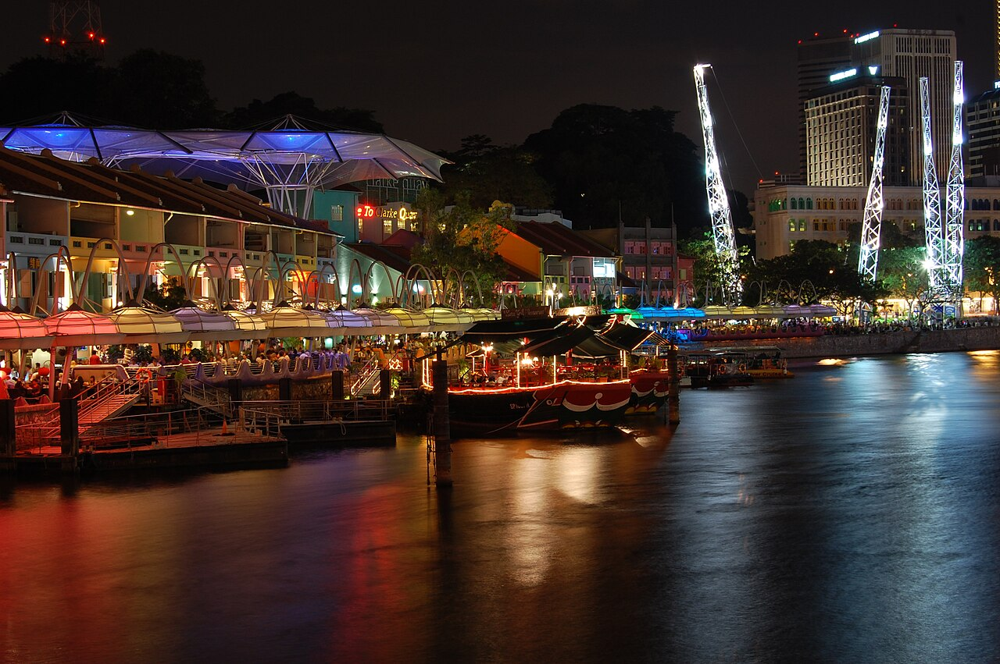
Bumboats and lit façades linking Clarke Quay nightlife to civic district bridges.
Clean-up campaigns removed polluting trades before glass towers framed both banks.
Cooling breezes for evening dining after Marina heat.